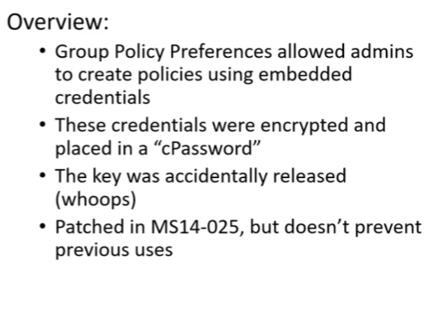

GPP:Group policy preferences(AKA: MS14-025)
loom for groups.xml file
to decrypt
#gpp -decrypt cPassword(we get this from groups.xml)
gpp is inbuilt in kali
this type of exploit present in 2012 server